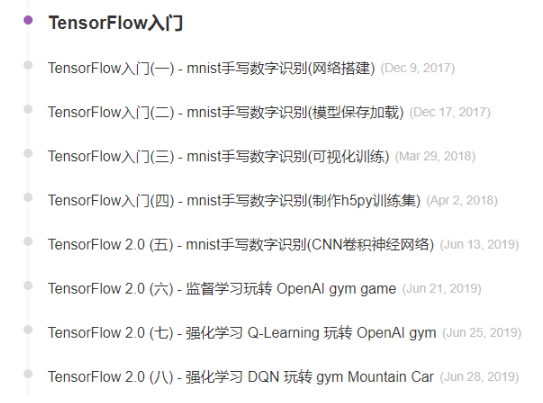

<!DOCTYPE html>
<html>
<head><meta name="generator" content="Hexo 3.8.0">
  <meta charset="utf-8">
  

  
  <title>HanXiaTu</title>
  <meta name="viewport" content="width=device-width, initial-scale=1, maximum-scale=1">
  <meta name="description" content="做一个有趣的人在这里不是想讨论如何做一个有趣的人的方法论，就是谈谈近期的一些感悟。 文章的标题还可以是做一个优秀的人、做一个有魅力的人……诸如此类。为什么要选择有趣呢？大概是有趣这个词即可以让自己鼓噪起来，又显得气氛轻松。 为什么想到想到这个话题呢？ 当你的身边有一些优秀的人的时候，是一件多么有趣的事！我是幸运的，在去年的7月，陆续和一些优秀的人聚到了一个团队中，经过一年的相处和观察，这些优秀的人">
<meta property="og:type" content="article">
<meta property="og:title" content="HanXiaTu">
<meta property="og:url" content="https://hanxiatu.com/post/20190701_essay.html">
<meta property="og:site_name" content="HanXiaTu">
<meta property="og:description" content="做一个有趣的人在这里不是想讨论如何做一个有趣的人的方法论，就是谈谈近期的一些感悟。 文章的标题还可以是做一个优秀的人、做一个有魅力的人……诸如此类。为什么要选择有趣呢？大概是有趣这个词即可以让自己鼓噪起来，又显得气氛轻松。 为什么想到想到这个话题呢？ 当你的身边有一些优秀的人的时候，是一件多么有趣的事！我是幸运的，在去年的7月，陆续和一些优秀的人聚到了一个团队中，经过一年的相处和观察，这些优秀的人">
<meta property="og:locale" content="default">
<meta property="og:image" content="https://hanxiatu.com/post/20190701_essay/tensorflow2.0-dj.png">
<meta property="og:updated_time" content="2019-07-01T15:01:21.061Z">
<meta name="twitter:card" content="summary">
<meta name="twitter:title" content="HanXiaTu">
<meta name="twitter:description" content="做一个有趣的人在这里不是想讨论如何做一个有趣的人的方法论，就是谈谈近期的一些感悟。 文章的标题还可以是做一个优秀的人、做一个有魅力的人……诸如此类。为什么要选择有趣呢？大概是有趣这个词即可以让自己鼓噪起来，又显得气氛轻松。 为什么想到想到这个话题呢？ 当你的身边有一些优秀的人的时候，是一件多么有趣的事！我是幸运的，在去年的7月，陆续和一些优秀的人聚到了一个团队中，经过一年的相处和观察，这些优秀的人">
<meta name="twitter:image" content="https://hanxiatu.com/post/20190701_essay/tensorflow2.0-dj.png">
  
    <link rel="alternate" href="/atom.xml" title="HanXiaTu" type="application/atom+xml">
  
  
    <link rel="icon" href="/favicon.png">
  
  
    <link href="//fonts.googleapis.com/css?family=Source+Code+Pro" rel="stylesheet" type="text/css">
  
  <link rel="stylesheet" href="/css/style.css">
</head>
</html>
<body>
  <div id="container">
    <div id="wrap">
      <header id="header">
  <div id="banner"></div>
  <div id="header-outer" class="outer">
    <div id="header-title" class="inner">
      <h1 id="logo-wrap">
        <a href="/" id="logo">HanXiaTu</a>
      </h1>
      
    </div>
    <div id="header-inner" class="inner">
      <nav id="main-nav">
        <a id="main-nav-toggle" class="nav-icon"></a>
        
          <a class="main-nav-link" href="/">Home</a>
        
          <a class="main-nav-link" href="/archives">Archives</a>
        
      </nav>
      <nav id="sub-nav">
        
          <a id="nav-rss-link" class="nav-icon" href="/atom.xml" title="RSS Feed"></a>
        
        <a id="nav-search-btn" class="nav-icon" title="Search"></a>
      </nav>
      <div id="search-form-wrap">
        <form action="//google.com/search" method="get" accept-charset="UTF-8" class="search-form"><input type="search" name="q" class="search-form-input" placeholder="Search"><button type="submit" class="search-form-submit">&#xF002;</button><input type="hidden" name="sitesearch" value="https://hanxiatu.com"></form>
      </div>
    </div>
  </div>
</header>
      <div class="outer">
        <section id="main"><article id="post-20190701_essay" class="article article-type-post" itemscope itemprop="blogPost">
  <div class="article-meta">
    <a href="/post/20190701_essay.html" class="article-date">
  <time datetime="2019-07-01T13:50:03.484Z" itemprop="datePublished">2019-07-01</time>
</a>
    
  </div>
  <div class="article-inner">
    
    
    <div class="article-entry" itemprop="articleBody">
      
        <h1 id="做一个有趣的人"><a href="#做一个有趣的人" class="headerlink" title="做一个有趣的人"></a>做一个有趣的人</h1><p>在这里不是想讨论如何做一个有趣的人的方法论，就是谈谈近期的一些感悟。</p>
<p>文章的标题还可以是<code>做一个优秀的人</code>、<code>做一个有魅力的人</code>……诸如此类。为什么要选择有趣呢？大概是<code>有趣</code>这个词即可以让自己鼓噪起来，又显得气氛轻松。</p>
<p>为什么想到想到这个话题呢？</p>
<p>当你的身边有一些优秀的人的时候，是一件多么有趣的事！我是幸运的，在去年的7月，陆续和一些优秀的人聚到了一个团队中，经过一年的相处和观察，这些优秀的人中，有两个特别有趣的小伙伴。</p>
<h2 id="geek"><a href="#geek" class="headerlink" title="geek"></a>geek</h2><p>有一个非常geek的小伙伴：年轻、有激情。最近他在玩博客（而我开始写个人博客，也是受其影响）。相比于我还是毛毛雨，他已经玩出了各种花样：</p>
<ul>
<li>自定义的主题 –&gt; 极致的加载速度<br><a href="https://github.com/geektutu/hexo-theme-geektutu" target="_blank" rel="noopener">https://github.com/geektutu/hexo-theme-geektutu</a></li>
<li>独立的思考：看到问题，提出思考，给出解决<br><a href="https://geektutu.com/post/blog-experience-1.html" target="_blank" rel="noopener">https://geektutu.com/post/blog-experience-1.html</a> 系列</li>
<li>有深度的专题《TensorFlow入门》<br><a href="https://geektutu.com/post/tensorflow-mnist-simplest.html" target="_blank" rel="noopener">https://geektutu.com/post/tensorflow-mnist-simplest.html</a> 系列<br></li>
</ul>
<p>在这些背后他其实付出了很多的观察，思考和努力。有时候会‘爆肝’赶文章，每一篇技术文章都是精心制作，而一些感悟的文章又是非常独具思考。</p>
<h2 id="文艺"><a href="#文艺" class="headerlink" title="文艺"></a>文艺</h2><p>另外一个小伙伴则是一个非常文艺的诗人（今天才知道他写诗，就这么叫吧）。本来只知道他读书很多，理智、细腻、有文艺范儿。</p>
<p>今天有幸拜读了他的博客 <a href="http://hutusi.com/" target="_blank" rel="noopener">http://hutusi.com/</a> ，很多篇文章我都蛮喜欢的。</p>
<ul>
<li><a href="http://hutusi.com/blog/2015/06/21/paternity" target="_blank" rel="noopener">陪产记</a> 写的很细腻，很多描写犹如在眼前，我最先读的一篇文章。</li>
<li><a href="http://hutusi.com/blog/2010/08/22/shakespeare" target="_blank" rel="noopener">四月莎士比亚</a> 标题很诗意，每篇的点评也很有趣。很羡慕可以静心读书的人。</li>
<li><a href="http://hutusi.com/blog/2007/04/11/wangxiaobo" target="_blank" rel="noopener">一只特立独行的猪</a> 哈哈，这篇颇有王小波的幽默感。<br><em>同样王小波也不会喜欢众多无聊的人对自己的裸体指指点点吧。他可能会这么幽默的跟塑像作者说：你丫也没见过我啥模样，这尺寸标准么？这样多少有些轻薄，我更愿意他这么说：你总不能让我一年四季都光着身子吧。</em><br><em>这中间有你的亲人，有你的粉丝，还有一大群不着边际吃饱了饭寻求刺激的人，他们说：小波的裸体我不乐意看，要看就看大波。</em></li>
<li><a href="http://hutusi.com/blog/2007/03/04/dream" target="_blank" rel="noopener">爱美丽、黑暗王子和豌豆公主</a> 奇怪的梦，有趣的连接，美丽的兴趣</li>
<li><a href="http://hutusi.com/blog/2007/02/27/yantai" target="_blank" rel="noopener">诗歌与烟台</a> </li>
<li>……</li>
</ul>
<p>哦，对了。他的博客很久没有更新，他自己也打算重新拎起来，作为follower，可以去催更了。</p>
<h2 id="一点思考"><a href="#一点思考" class="headerlink" title="一点思考"></a>一点思考</h2><p>看到别人有趣而精彩的人生，不免有些羡慕。我看到的是无论geek和文艺，这背后都有他们长期以往的坚持以及为此付出的时间。</p>
<p>而我的时间哪里去了呢？</p>
<p>回想过往，我的时间在这里</p>
<ul>
<li>学习和工作</li>
<li>足球</li>
<li>微博 + 其他信息流</li>
<li>一些漫无目的的事</li>
</ul>
<p>学习和工作不在这里讨论。足球上花的时间总是值得的。</p>
<p>微博应该减少，作为获取足球信息和一些基本新闻的渠道可以，但是不要总是去反复刷。</p>
<p>其实过往一些零碎的时间利用的不是很好，很多都淹没在一些无意思的信息流产品上，今后多花点时间写博客，多读书。</p>
<p>就像文艺的诗人所说，读书可以给自己提供<code>素材</code>，只要多读，这些东西就会印在脑海里，写作可以锻炼思维，触发思考。</p>
<p>不知道是不是这样就会成为一个有趣的人，也许，跑题了。</p>
<h2 id="后记"><a href="#后记" class="headerlink" title="后记"></a>后记</h2><p>为什么写这篇博文，一是有了点小感悟。觉得写下来也无妨，而是在朋友的影响下，确实想好好写一些博客，一方面对自己的学习和感悟做记录，另一方面也许可以对互联网世界贡献一些自己的知识。</p>
<p>可以写下来，发现博客真的很，尤其以技术博文为主的话。第一篇技术博客文章+工程花费了一个多星期。后面的博文迟迟也没有想好写什么，没有那位geek小伙伴的极大的热情，也没有他肚子里装满的干货。但不管怎样，先写一篇感悟‘滥竽充数’，后面的文章要加油了！！！</p>

      
    </div>
    <footer class="article-footer">
      <a data-url="https://hanxiatu.com/post/20190701_essay.html" data-id="cjxkij33h0001j4u47y181cvs" class="article-share-link">Share</a>
      
      
    </footer>
  </div>
  
    
<nav id="article-nav">
  
  
    <a href="/post/20190619_meshview.html" id="article-nav-older" class="article-nav-link-wrap">
      <strong class="article-nav-caption">Older</strong>
      <div class="article-nav-title">MeshView</div>
    </a>
  
</nav>

  
</article>

</section>
        
          <aside id="sidebar">
  
    

  
    

  
    
  
    
  <div class="widget-wrap">
    <h3 class="widget-title">Archives</h3>
    <div class="widget">
      <ul class="archive-list"><li class="archive-list-item"><a class="archive-list-link" href="/archives/2019/07/">July 2019</a></li><li class="archive-list-item"><a class="archive-list-link" href="/archives/2019/06/">June 2019</a></li></ul>
    </div>
  </div>


  
    
  <div class="widget-wrap">
    <h3 class="widget-title">Recent Posts</h3>
    <div class="widget">
      <ul>
        
          <li>
            <a href="/post/20190701_essay.html">(no title)</a>
          </li>
        
          <li>
            <a href="/post/20190619_meshview.html">MeshView</a>
          </li>
        
      </ul>
    </div>
  </div>

  
</aside>
        
      </div>
      <footer id="footer">
  
  <div class="outer">
    <div id="footer-info" class="inner">
      &copy; 2019 hanxiatu<br>
      Powered by <a href="http://hexo.io/" target="_blank">Hexo</a>
    </div>
  </div>
</footer>
    </div>
    <nav id="mobile-nav">
  
    <a href="/" class="mobile-nav-link">Home</a>
  
    <a href="/archives" class="mobile-nav-link">Archives</a>
  
</nav>
    

<script src="//ajax.googleapis.com/ajax/libs/jquery/2.0.3/jquery.min.js"></script>


  <link rel="stylesheet" href="/fancybox/jquery.fancybox.css">
  <script src="/fancybox/jquery.fancybox.pack.js"></script>


<script src="/js/script.js"></script>


  </div>
</body>
</html>